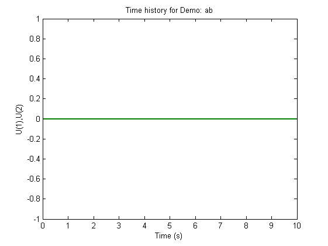
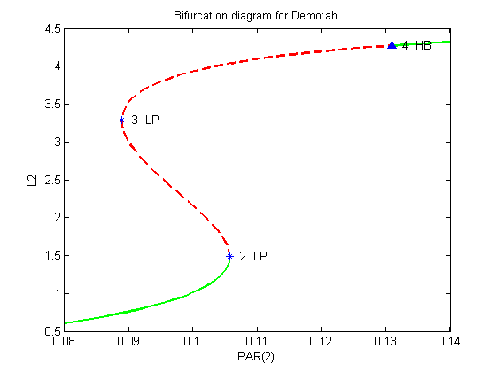
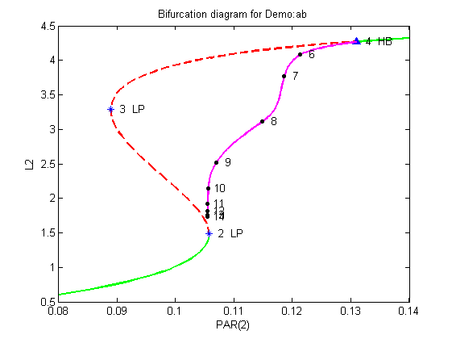
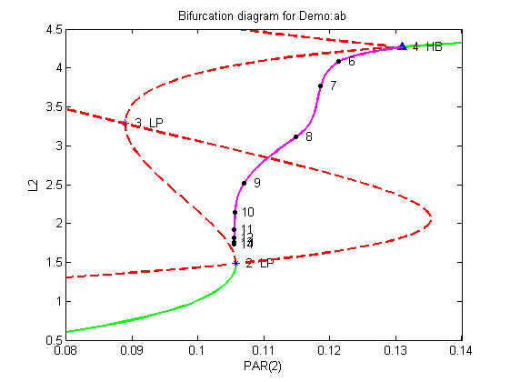
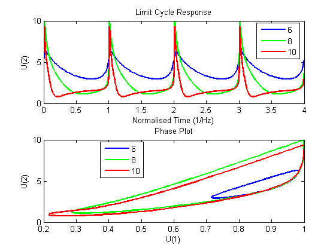

Matlab example with demo 'ab' in 07P mode
This demonstration uses the 'ab' example of AUTO to demonstrate the use of the Dynamical Systems Toolbox in the 07P (AUTO) mode. Input and output files are similar to the ones used in AUTO.
Contents
- Find the equilibrium of the system
- Adjust equations file to contain correct initial conditions
- Compute stationary solutions
- Plot stationary solutions
- Compute periodic solutions
- Plot periodic solutions
- Two-parameter continuation, follow locus of lower limit point (Forward)
- Two-parameter continuation, follow locus of lower limit point (Backward)
- Two-parameter continuation, follow locus of Hopf point (Backward)
- Plot the locii of the limit points and Hopf bifurcation
- Plot the limit cycle response
Find the equilibrium of the system
The continuation run has to start from an equilibrium state, or a stable limit cycle condition. Most applications will start from an equilibrium condition. This equilibrium is also known as a quasi-steady state, or a trim condition. There are two ways to obtain such an equilibrium:
- Run the simulation for a sufficient period of time, until the derivatives (of the states of interest) are equal to zero. This is the easiest option.
- Use a trim routine to obtain a trim point.
Choose/guess initial conditions
PAR0=[0,14,2;0,14,2]'; ts=[0,10]'; U0=[0,0]';
Run simulation. The equations need to be defined in a separate function file abode.m to that of the continuation function file, so that we can use the ode45 solver.
options=simset('MaxStep',0.1);
[T,Y]=ode45(@(t,U) abode(t,U,ts,PAR0),ts,U0,options);
Plot the results out. We can see that the state derivatives are zero. This is a trivial example seeing that we could have checked this by hand, but the method is applicable for more complex models.
h=plot(T,Y); set(h,'LineWidth',2); title('Time history for Demo: ab'); xlabel('Time (s)'); ylabel('U(1),U(2)'); snapnow; close(gcf);
Adjust equations file to contain correct initial conditions
We can now use the final states of the simulation as starting conditions for the continuation runs. If the derivatives for these states are not zero, the continuation runs will fail. Update the stpnt.m function to reflect the initial conditions.
Create an auto object
a=auto;
Define input and output files
a.s.RunMode='07P'; a.s.FuncFileName='abmatfunc'; a.s.OutFileName='ab';
Compute stationary solutions
Generate an AUTO restart file by running AUTO.
Make sure no restart files are present
delete s.*
Copy constants file
copyfile('c.ab.1','c.ab');
Run continuation
runauto(a);
---------------------- AUTO07 FOR MATLAB ---------------------
USER NAME : ECOETZEE
DATE : 26/10/2010 10:02:11
MODEL NAME : ab
CONSTANTS FILE : c.ab
<
BR PT TY LAB PAR(01) L2-NORM U(01) U(02)
1 1 EP 1 0.00000E+00 0.00000E+00 0.00000E+00 0.00000E+00
1 33 LP 2 1.05739E-01 1.48439E+00 3.11023E-01 1.45144E+00
1 70 LP 3 8.89318E-02 3.28824E+00 6.88982E-01 3.21525E+00
1 90 HB 4 1.30900E-01 4.27187E+00 8.95080E-01 4.17704E+00
1 92 EP 5 1.51242E-01 4.36975E+00 9.15589E-01 4.27275E+00
Total Time 0.938E-01
>
Save data to output files - b.ab, d.ab, s.ab
sv('matab1');
Saving fort.7 as b.matab1... done Saving fort.8 as s.matab1... done Saving fort.9 as d.matab1... done
Plot stationary solutions
We have seen from the output to the MATLAB command window that there are two limit points and one Hopf bifurcation. We have written a small routine to extract the data from the fort.7 output file. You can try to write your own routine, or you can use the simple routine ploteq. Plot the results out to see what the bifurcation diagram looks like. We plot the continuation paramter PAR(2) against the L2-NORM parameter. Note the plotting conventions that are used. Solid lines are used for stable equilibrium states, and broken lines for unstable equilibrium states. The limit points (LP) indicate a qualitative change in the stability, while the Hopf bifurcation (HB) indicates a transition from a steady state to a limit cycle.
ploteq('matab1','PAR(2)','L2'); snapnow;
Compute periodic solutions
We want to do the continuation from the Hopf Bifurcation to determine the amplitude and frequency of the limit cycle as we change the parameter.
Copy the constants file
copyfile('c.ab.2','c.ab');
Run continuation
runauto(a);
---------------------- AUTO07 FOR MATLAB ---------------------
USER NAME : ECOETZEE
DATE : 26/10/2010 10:02:12
MODEL NAME : ab
CONSTANTS FILE : c.ab
RESTART FILE : s.ab
<
BR PT TY LAB PAR(01) L2-NORM MAX U(01) MAX U(02) PERIOD
4 30 6 1.21347E-01 4.08243E+00 9.83711E-01 6.30390E+00 2.29801E+00
4 60 7 1.18591E-01 3.76857E+00 9.97665E-01 8.25264E+00 3.66907E+00
4 90 8 1.14794E-01 3.11323E+00 9.99585E-01 9.97959E+00 6.25524E+00
4 120 9 1.06928E-01 2.51769E+00 9.99368E-01 9.62065E+00 9.53437E+00
4 150 10 1.05558E-01 2.14343E+00 9.99115E-01 9.33106E+00 1.60574E+01
4 180 11 1.05507E-01 1.91563E+00 9.99107E-01 9.29963E+00 2.89632E+01
4 210 12 1.05507E-01 1.81363E+00 9.99096E-01 9.29899E+00 4.39597E+01
4 240 13 1.05507E-01 1.76140E+00 9.99092E-01 9.29758E+00 5.89585E+01
4 270 14 1.05507E-01 1.72960E+00 9.99094E-01 9.29921E+00 7.39580E+01
4 300 EP 15 1.05507E-01 1.70820E+00 9.99093E-01 9.29914E+00 8.89577E+01
Total Time 0.376E+02
>
Save the data into different files
sv('matab2');
Saving fort.7 as b.matab2... done Saving fort.8 as s.matab2... done Saving fort.9 as d.matab2... done
Plot periodic solutions
Add the L2-NORM of the Hopf-bifurcation. This shows up as magenta in the plot below.
ploteq('matab2','PAR(2)','L2'); snapnow;
Two-parameter continuation, follow locus of lower limit point (Forward)
Trace out the locus of the lower limit point while stepping in a forward direction. We vary the first and the thrid parameters for the continuation, so restart from label 2 in this first continuation, hence we need to copy the restart file from the first run to the appropriate name.
copyfile('s.matab1','s.ab');
Copy the constants file
copyfile('c.ab.3','c.ab');
Run continuation
runauto(a);
---------------------- AUTO07 FOR MATLAB ---------------------
USER NAME : ECOETZEE
DATE : 26/10/2010 10:02:51
MODEL NAME : ab
CONSTANTS FILE : c.ab
RESTART FILE : s.ab
<
BR PT TY LAB PAR(01) L2-NORM U(01) U(02) PAR(03)
2 27 LP 6 1.35335E-01 2.06249E+00 5.00226E-01 2.00091E+00 2.50000E+00
2 100 EP 7 2.07738E-07 1.82583E+01 9.45157E-01 1.82339E+01 -2.74306E-01
Total Time 0.781E+00
>
Save the data
sv('matab3');
Saving fort.7 as b.matab3... done Saving fort.8 as s.matab3... done Saving fort.9 as d.matab3... done
Two-parameter continuation, follow locus of lower limit point (Backward)
Trace out the locus of the lower limit point while stepping in a backward direction. We vary the first and the thrid parameters for the continuation, so restart from label 2 in this first continuation, hence we need to copy the restart file from the first run to the appropriate name.
copyfile('s.matab1','s.ab');
Copy the constants file
copyfile('c.ab.4','c.ab');
Run continuation
runauto(a);
---------------------- AUTO07 FOR MATLAB ---------------------
USER NAME : ECOETZEE
DATE : 26/10/2010 10:02:52
MODEL NAME : ab
CONSTANTS FILE : c.ab
RESTART FILE : s.ab
<
BR PT TY LAB PAR(01) L2-NORM U(01) U(02) PAR(03)
2 35 EP 6 -1.31940E-03 9.96433E-01 -3.58652E-03 9.96426E-01 -1.05039E+00
Total Time 0.281E+00
>
Save the data
sv('matab4');
Saving fort.7 as b.matab4... done Saving fort.8 as s.matab4... done Saving fort.9 as d.matab4... done
Two-parameter continuation, follow locus of Hopf point (Backward)
Trace out the locus of the Hopf Bifurcation while stepping in a backward direction. We vary the first and the thrid parameters for the continuation, so restart from label 4 in this first continuation, hence we need to copy the restart file from the first run to the appropriate name.
copyfile('s.matab1','s.ab'); % Copy the constants file copyfile('c.ab.5','c.ab');
Run continuation
runauto(a);
---------------------- AUTO07 FOR MATLAB ---------------------
USER NAME : ECOETZEE
DATE : 26/10/2010 10:02:53
MODEL NAME : ab
CONSTANTS FILE : c.ab
RESTART FILE : s.ab
<
BR PT TY LAB PAR(01) L2-NORM U(01) U(02) PAR(03)
4 100 EP 6 8.81006E-05 1.17440E+01 9.14609E-01 1.17083E+01 9.36293E-02
Total Time 0.108E+01
>
Save the data
sv('matab5');
Saving fort.7 as b.matab5... done Saving fort.8 as s.matab5... done Saving fort.9 as d.matab5... done
Plot the locii of the limit points and Hopf bifurcation
Add the locii of the limit points and Hopf bifurcation
ploteq('matab3','PAR(2)','L2'); ploteq('matab4','PAR(2)','L2'); ploteq('matab5','PAR(2)','L2'); snapnow; close(gcf);
Plot the limit cycle response
We have written a small routine to extract the data from the fort.8 output file for the second run. Plot the response of the limit cycle behaviour at points 6, 8, 10. AUTO normalises the response so that the period is equal to 1 second. The plot on the left shows the response of state U(2), while the plot on the right shows a phase plot.
plotlc('matab2');
snapnow;
close(gcf);
